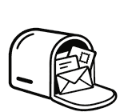

生活中总有这样的时刻——
一些问题忽然想明白了，想找人说说，又无处可说。
不如写下来，寄给未来的自己。
当下想明白的问题与答案，原原本本写下来。
不必修饰，不必给谁看——这里没有模板，没有评判，你的每一句话都会被原样收进信里。
十款手作信纸版式，从号外头版到航空笺，各有各的脾气；再配上信封与一枚火漆。
轻轻按下「封存寄出」，它便落进你的信匣，安静地开始等待。
信匣每天会为你挑选一封「今日来信」。也许是上周的你，也许是几年前的你。
重读一遍当年的答案，若还想说点什么，就写一封回信贴上去——信会越来越厚，像年轮，也像回声。